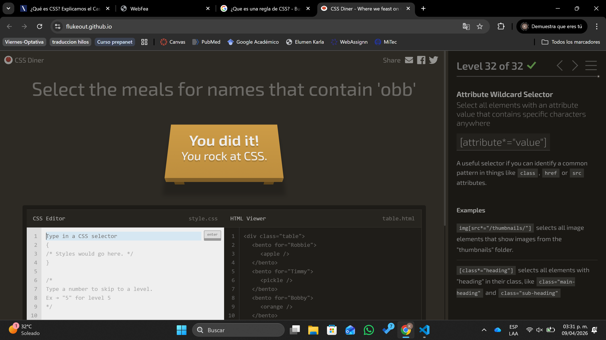
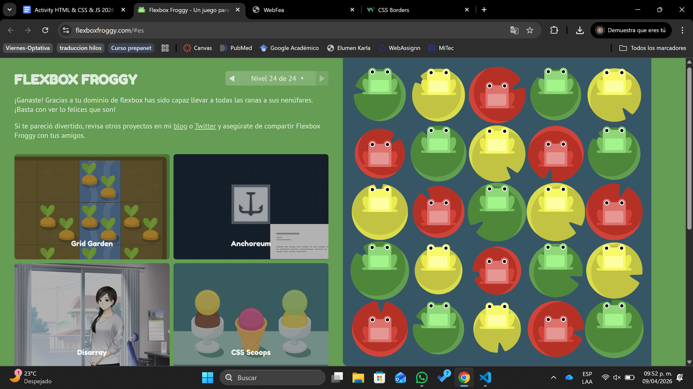
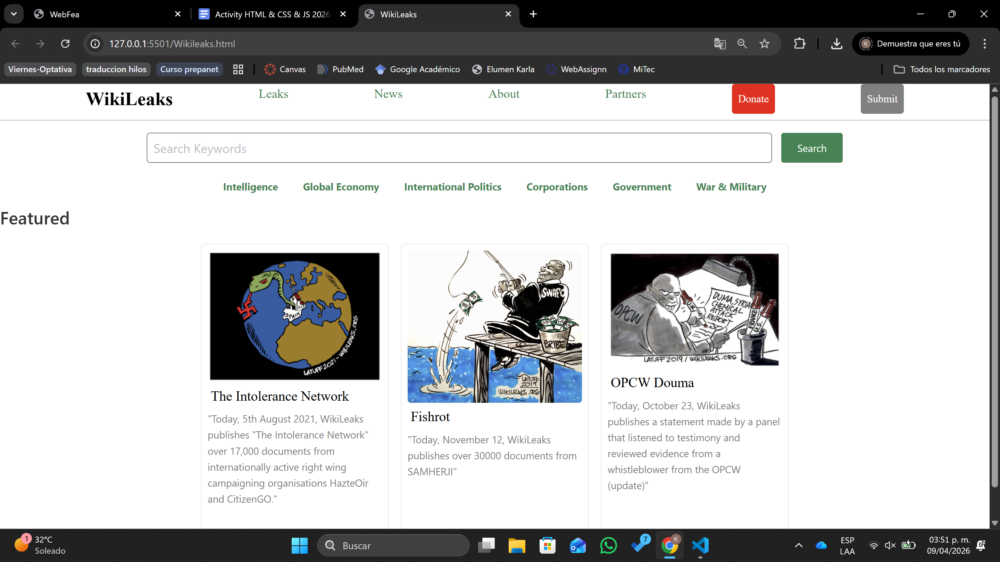

Etiquetas (tags) basicas

Karla Denisse Martinez Ponce
HTML (HyperText Markup Language) es el lenguaje de programacion usualmente utilizado para realizar la estructura de las paginas web. Mas que un lenguaje de programacion, es un lenguaje "marcado", ya que le indica a los navegadores que es cada elemento y como se organiza en pantalla. Es decir, HTML le dice a los navegadores como se debe ver la pagina web.
Una seccion es un agrupamiento de contenido tematico, tipicamente con un encabezado. Como las tarjetas que te hacian hacer en la primaria, que es de un solo tema y tiene titulo y texto.
Indica un elemento independiente y autonomo (no depende de nada, ni del resto de de la pagina). Se usa para publicaciones en foros, entradas de blog, comentarios de los usuarios, etc.
Es un elemento que define un contenido adicional al contenido en el que se encuentra (como una barra lateral). El contenido debe estar relacionado indirectamente con el contenido circundante.
Es un elemento que le da un espacio definido, normalmente contenido introductorio o conjunto de enlaces de navegacion. Normalmente contiene elementos de encabezado (h1, ...h6) logotipos e informacion de autoria.
Es un pie de pagina para una pagina web o una seccion.
| Primera celda | Segunda celda | Tercer celda | Hola |
| Primera celda, segunda fila | Segunda celda, segunda fila | Tercer celda, segunda fila | Hola2 |
Cascading Style Sheets (CSS) es el lenguaje de programacion utilizado para determinar el diseño de los documentos electronicos (en este caso, se utiliza para darle formato a las paginas web) Con CSS se hacen cambios como la tipografia, el tamaño, etc.
Hay 3 formas populares de aplicar CSS a HTML para darle estilo a una pagina web:
Los selectores definen sobre qué elementos se aplicara un conjunto de reglas CSS. Los selectores principales son:
"At-rules", o reglas, en CSS se refieren a las instrucciones CSS que indican como comportarse. Empiezan por @ y son seguidas de un identificador y finalizan con ; Se usan para agrupar y estructurar reglas de estilo y otras reglas, declarar información de estilo no asociada directamente con el contenido seleccionado, entre otras funciones.

Una clase en HTML es un atributo que permite agrupar varios elementos para aplicarles los mismos estilos o comportamientos mediante CSS o JavaScript. Se puede usar en multiples elementos dentro de una misma pagina.
Un ID es un atributo en HTML que sirve para identificar de manera UNICA a un SOLO elemento dentro de una pagina. Este ID no debe repetirse en otros elementos.
En CSS, las clases se seleccionan con un punto (.) seguido del nombre de la clase, y los IDs se seleccionan con el simbolo # seguido del nombre del ID. Ambos permiten aplicar estilos, pero las clases son reutilizables y los IDs son unicos.
Tambien llamado selector de elementos, selecciona todos los elementos HTML del tipo especificado.
Selecciona los elementos en la pagina con la clase especificada (una clase puede aparecer varias veces en una pagina).
Selecciona un elemento por etiqueta y clase al mismo tiempo.
Selecciona el elemento en la pagina con el ID especificado (en una página HTML dada, solo se permite un unico elemento por ID).
Es una caja que envuelve un elemento HTML y controla el diseño y la disposición. En CSS, cada elemento se comporta como una caja, y esa caja tiene 4 partes principales:
Media queries o "consultas de medios" (traducida directamente al español) permiten aplicar estilos CSS segun el tipo general de un dispositivo u otras caracteristicas como la resolucion de la pantalla o el ancho del viewport del navegador. En otras palabras es un ajuste para dispositivos especificos.
Formalmente la propiedad display establece los tipos de visualizacion interna y externa de un elemento. La externa establece la participacion de un elemento en flow layout; la interna establece el layout o Diseño de los hijos
El elemento se comporta como un elemento de bloque y establece su contenido de acuerdo con el modelo de cuadricula.
El elemento se comporta como un elemento de bloque y establece su contenido de acuerdo con el modelo de flexbox .



Usando link rel="stylesheet" href="https://unpkg.com/chota@latest"
Codecademy. (s.f.). Learn CSS: The Box Model Cheatsheet - Codecademy. Codecademy. https://www.codecademy.com/learn/fscp-improved-styling-with-css/modules/fecp-learn-css-the-box-model/cheatsheet IONOS. (21 de junio del 2022). ¿Qué es CSS? Definicion y aplicacion. IONOS. https://www.ionos.mx/digitalguide/paginas-web/diseno-web/que-es-css/ Marin, R. (s.f.). Los 5 métodos para incluir css en html que deberías conocer. INESEM. https://www.inesem.es/revistadigital/informatica-y-tics/incluir-css-en-html MDN Web Docs. (7 de noviembre del 2025). At-rules. Developer Mozilla. https://developer.mozilla.org/en-US/docs/Web/CSS/Guides/Syntax/At-rules MDN Web Docs. (31 de marzo del 2026). CSS basico. Developer Mozilla. https://developer.mozilla.org/es/docs/Learn_web_development/Getting_started/Your_first_website/Styling_the_content MDN Web Docs. (31 de marzo del 2026). Selectores CSS. Developer Mozilla. https://developer.mozilla.org/es/docs/Web/CSS/Guides/Selectors#:~:text=Los%20selectores%20definen%20sobre%20qu%C3%A9,un%20conjunto%20de%20reglas%20CSS. MDN Web Docs. (31 de marzo del 2026). Uso de media queries - CSS - MDN Web Docs. Developer Mozilla. https://developer.mozilla.org/es/docs/Web/CSS/Guides/Media_queries/Using#:~:text=Las%20Media%20queries%20le%20permiten,ancho%20del%20viewport%20del%20navegador. Universidad Europea. (24 de marzo del 2026). Qué es HTML: el lenguaje con el que se construye la web. Universidad Europea. https://universidadeuropea.com/blog/que-es-html/ W3 Schools. (s.f.). HTML Semantic Elements. W3Schools. https://www.w3schools.com/html/html5_semantic_elements.asp Extras (usadas para el diseño): https://www.w3schools.com/html/html_images_background.asp https://www.w3schools.com/css/css_list.asp https://developer.mozilla.org/en-US/docs/Web/HTML/Reference/Elements/aside https://www.youtube.com/watch?v=KIKR0FHwEbo&t=146s https://welearncode.com/rainbow-text/#:~:text=One%20method%20for%20adding%20a,the%20left%20of%20the%20letter. https://www.w3schools.com/css/css_border.asp